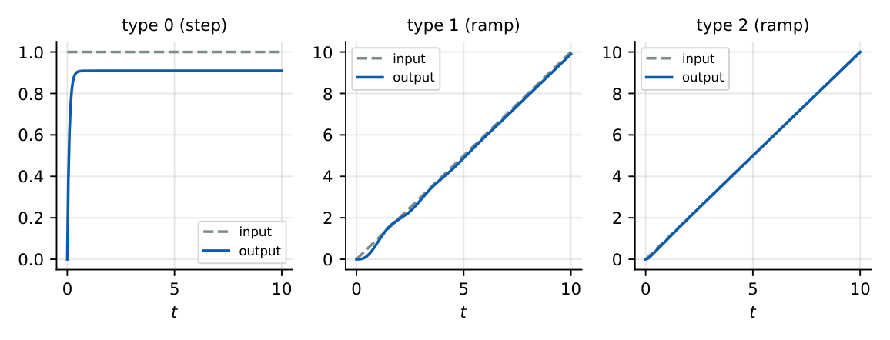

Steady-State Analysis and System Type
In this chapter
Static error constants \(K_p,K_v,K_a\); error for step, ramp and parabolic inputs by system type; find gain \(K\) for a given error; effect of disturbances. Guaranteed 1–2 questions per paper.
10.1 Core concept
The response has a transient part (dies out) and a steady-state part. The steady-state error is \(e_{ss}=\lim_{t\to\infty}e(t)\), computed by the final-value theorem provided \(sE(s)\) has all poles in the LHP, i.e. the closed loop must be stable.
\(E(s)=R(s)-B(s)=\dfrac{R(s)}{1+G(s)H(s)}\), so \[ e_{ss}=\lim_{s\to0}sE(s)=\lim_{s\to0}\dfrac{sR(s)}{1+G(s)H(s)}. \] (For \(H\neq1\) this is the actuating error \(r-b\); the true output error \(r-c\) is obtained by converting to an equivalent unity-feedback loop with \(G_{eq}=G/(1+G(H-1))\).)
10.2 System type
The type of a system is the number of poles of \(G(s)H(s)\) at the origin. Write \(GH=\dfrac{K\prod(1+T_is)}{s^N\prod(1+T_ks)}\); then type \(=N\) and \(K\) is the error (gain) constant in the form where all factors equal \(1\) at \(s=0\).
10.3 Static error constants
\(K_p=\lim_{s\to0}G(s)H(s)\), \(K_v=\lim_{s\to0}s\,G(s)H(s)\), \(K_a=\lim_{s\to0}s^2G(s)H(s)\).
1.35
| Error constants | Steady-state error for | |||||
| Type | \(K_p\) | \(K_v\) | \(K_a\) | unit step | unit ramp | unit parabola |
| 0 | \(K\) | \(0\) | \(0\) | \(\dfrac1{1+K}\) | \(\infty\) | \(\infty\) |
| 1 | \(\infty\) | \(K\) | \(0\) | \(0\) | \(\dfrac1K\) | \(\infty\) |
| 2 | \(\infty\) | \(\infty\) | \(K\) | \(0\) | \(0\) | \(\dfrac1K\) |
| 3 | \(\infty\) | \(\infty\) | \(\infty\) | \(0\) | \(0\) | \(0\) |
For an input of magnitude \(A\) (step \(Au\), ramp \(At\), parabola \(At^2/2\)) multiply the error by \(A\): \(\dfrac{A}{1+K_p},\ \dfrac{A}{K_v},\ \dfrac{A}{K_a}\).

10.4 Superposition of inputs
For \(r(t)=A_0+A_1t+\tfrac12A_2t^2\) the total error is \(\dfrac{A_0}{1+K_p}+\dfrac{A_1}{K_v}+\dfrac{A_2}{K_a}\), and it is \(\infty\) if any term is infinite.
10.5 Effect of a disturbance
With \(D\) entering between \(G_1\) and \(G_2\) and \(H=1\), the output caused by \(D\) is \(C_d=\dfrac{G_2}{1+G_1G_2}D\); with \(R=0\) the error is \(E_d=-C_d\), giving \[ e_{ss,d}=-\lim_{s\to0}\dfrac{sG_2(s)}{1+G_1(s)G_2(s)}D(s). \] The steady error to a step disturbance is reduced by making \(G_1(0)\) large or by putting an integrator ahead of the disturbance (in \(G_1\)), not after it.
10.6 Solved examples
\(G=\dfrac{10}{s(s+2)}\), \(H=1\): \(K_v=\dfrac{10}{2}=5\); ramp error \(=0.2\); step error \(=0\); parabolic \(=\infty\).
\(G=\dfrac{20(s+1)}{s^2(s+4)}\): \(K_a=\dfrac{20}{4}=5\); parabolic error for \(\tfrac12t^2\): \(0.2\); ramp error \(0\).
\(G=\dfrac{10}{(s+1)(s+2)}\): \(K_p=5\); step error \(=\dfrac1{6}\).
\(G=\dfrac{K}{s(s+5)}\): to keep the ramp error \(\le0.05\), \(K_v=K/5\ge20\Rightarrow K\ge100\). (Stability holds for all \(K>0\), and \(\zeta=\dfrac{5}{2\sqrt{100}}=0.25\) at \(K=100\): a high overshoot: a trade-off between accuracy and transient response.)
Type-1 with \(K_v=4\) and input \(2+3t\): step error \(0\), ramp \(3/4\); total \(0.75\).
\(G=\dfrac{10}{s(s+1)}\), \(H=0.5\): \(GH=\dfrac{5}{s(s+1)}\), \(K_v=5\), actuating error for a unit ramp \(=0.2\).
10.7 Physical interpretation
Each integrator in the loop forces one order of input error to zero: to hold zero error against a constant input the controller must keep “pushing” with an integrated (accumulated) error. Higher type \(\Rightarrow\) better steady-state accuracy but worse stability margins.
Type tells the error class: type \(N\) has finite non-zero error for the \(N\)th-order input, zero error for lower orders, and \(\infty\) for higher. Compute \(K_v\), \(K_a\) by stripping the \(s^N\) factor and setting \(s=0\) in the rest. Only the low-frequency (DC) part of \(G\) matters.
(i) Do not apply the formulas if the closed loop is unstable. (ii) Type is from the open-loop \(GH\) (including \(H\)). (iii) The error constants are defined with the standard form: \(G=\dfrac{K(s+z)}{s(s+p)}\) has \(K_v=\dfrac{Kz}{p}\), not \(K\). (iv) Parabolic input is \(t^2/2\); for \(t^2\) the error doubles. (v) Type is not the order.
Q1. A type-1 unity-feedback system has zero steady-state error for (A) step (B) ramp (C) parabola (D) all.
Q2. \(G=\dfrac{K}{s(s+1)}\): \(K_v=\) (A) \(0\) (B) \(K\) (C) \(\infty\) (D) \(1/K\).
Q3. Type-0 system, unit step: \(e_{ss}=\) (A) \(0\) (B) \(\dfrac1{1+K_p}\) (C) \(\dfrac1{K_v}\) (D) \(\infty\).
Answers: Q1 (A). Q2 (B). Q3 (B).
Q4. \(G=\dfrac{50(s+2)}{s(s+5)(s+10)}\) (unity feedback). Ramp error is (A) \(0.5\) (B) \(1\) (C) \(0.25\) (D) \(2\).
Q5. Input \(r=4t\) and \(G=\dfrac{K}{s(s+4)}\). For \(e_{ss}\le0.2\) the minimum \(K\) is (A) \(20\) (B) \(40\) (C) \(80\) (D) \(10\).
Answers: Q4 (A): \(K_v=\dfrac{50\cdot2}{5\cdot10}=2\), so \(e=0.5\). Q5 (C): \(K_v=K/4\), \(e=4/K_v=16/K\le0.2\Rightarrow K\ge80\).
Q6. \(G=\dfrac{10}{s^2(s+5)}\): steady-state error for \(r=\tfrac12t^2\) is .
Q7. \(G(s)=\dfrac{9}{(s+3)(s+1)}\): step error is (two decimals).
Answers: Q6: \(K_a=10/5=2\), \(e=0.5\). Q7: \(K_p=3\), \(e=1/4=0.25\).
Q8. For a type-2 unity-feedback stable system: (A) zero step error (B) zero ramp error (C) finite parabola error (D) \(K_v=0\).
Answers: Q8: (A), (B), (C).
A unity-feedback system with \(G=\dfrac{K(s+3)}{s(s+1)(s+5)}\) has ramp error \(0.1\): \(K_v=\dfrac{3K}{5}=10\Rightarrow K=16.7\). (Check stability of \(s^3+6s^2+(5+K)s+3K\): needs \(6(5+K)>3K\), true for \(K>0\).)
T1. Find \(K_p,K_v,K_a\) for \(G=\dfrac{20}{s^2(s+2)}\).
T2. Type-1, \(K_v=10\): error for \(r=5+2t\).
Answers: T1: \(K_p=K_v=\infty\), \(K_a=10\). T2: \(0.2\).
- \(e_{ss}=\lim sR/(1+GH)\); stable loop required.
- \(K_p=GH(0)\), \(K_v=\lim sGH\), \(K_a=\lim s^2GH\).
- Type \(N\): error is finite for \(N\)th-order input, zero below, \(\infty\) above.
- Errors: \(\tfrac{A}{1+K_p},\ \tfrac{A}{K_v},\ \tfrac{A}{K_a}\).